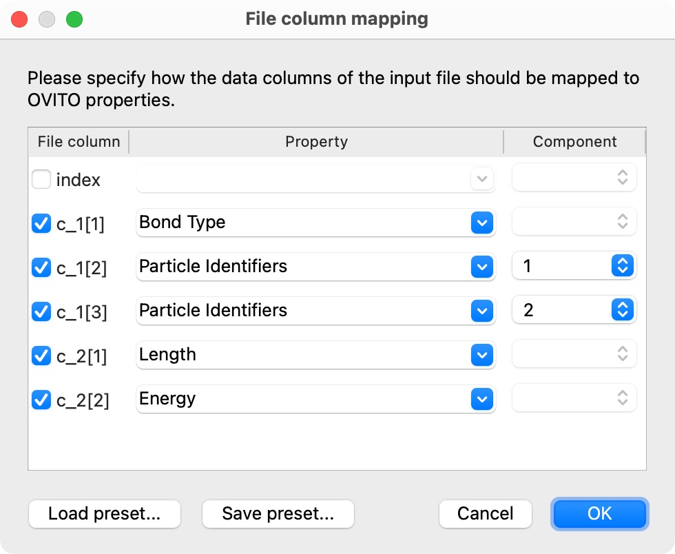

LAMMPS dump local file reader
User interface of the LAMMPS dump local reader, when attached to a Load trajectory modifier.
For loading per-bond data from files written by the dump command of the LAMMPS simulation code.
Supported format variants
The reader specifically handles files written by the LAMMPS dump style local.
Since such files only store per-bond information but no particle data, the file reader is typically used
in conjunction with a Load trajectory modifier to amend an already loaded
particle model with varying bonds, e.g. from a reactive MD simulation.
The reader can parse gzipped files (“.gz” suffix) directly. Binary files (“.bin” suffix) are not supported.
Column-to-property mapping
The different data columns in a dump local file must be mapped to corresponding bond properties within OVITO during file import. Since OVITO cannot guess the right mapping automatically in most cases (because file columns have user-defined names), you usually have to specify the correct mapping by hand in the following dialog displayed by the file reader:
{kind=link}
File columns get automatically mapped to corresponding standard properties in OVITO if their names
match one of the predefined standard bond properties (case insensitive).
Spaces that are part of a standard property name must be left out, because LAMMPS dump files do not support column names containing spaces. For example,
a dump file column named BondType will be mapped to the standard property Bond Type.
For standard properties with multiple components, a component name must be appended with a dot. For example, a dump file column
named ParticleIdentifiers.A will automatically be mapped to the second component of the Particle Identifiers standard bond property
in OVITO. Note that you can use the LAMMPS dump_modify colname command to give the columns in your dump file specific names.
For further information on how to set up the bond property mapping correctly, see the Load trajectory modifier.
Python parameters
The file reader accepts the following keyword parameters in a call to the load() Python function:
- load(location, columns=None)
- Parameters:
columns (list[str|None]) – A list of OVITO bond property names, one for each data column in the dump local file. List entries may be set to
Noneto skip individual file columns during parsing.